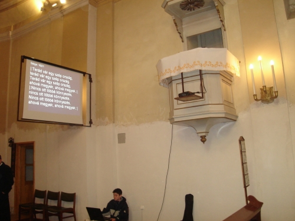
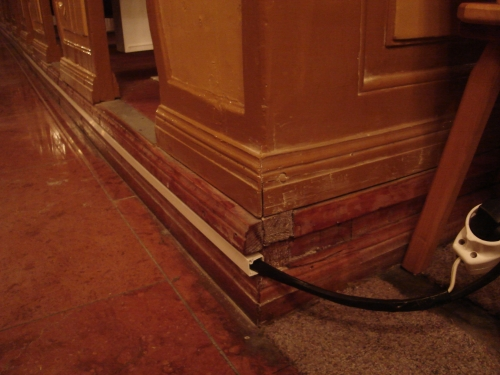
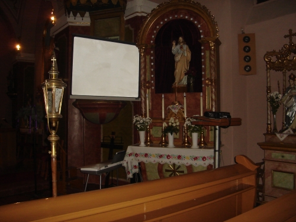

Albertirsán régebb óta mûködik a rendszer, de itt nincs a kórusra felvíve a számítógép. A szószék mellett van a vetítõvászon egy falra szerelt, kihajtható konzolon, magára a szószékre pedig egy konzollal a projektor. Onnan elölrõl mûködteti néhány iskolás gyerek. Mise elõtt a kántorral megkonzultálják a mise énekrendjét, és õk vetítik ki az ordináriumokkal együtt.
És tényleg hasznos! Amióta kivetítés van, több új éneket is sikerült megtanulni, és bátrabban énekelnek a hívek. Egy alkalommal a gyerekek rosszul írták be az énekszámot, amit a kántor mondott nekik, így nem vetítettek ki semmit. Szinte síri csönd volt az alatt az idõ alatt, amikor megtalálták, és kivetítették. Akkor azután mindenki bekapcsolódott! Tehát a hívek is hozzászoktak, és értékelik a hasznosságát.

A korábbi tapasztalatokat is figyelembe véve, Ceglédbercelen a kántor kérésére úgy építettük ki a rendszert, hogy fentrõl, az orgona mellõl lehet vezérelni a vetítõt. Kicsit komolyabbra is sikerült a rendszer. Ott tényleg úgy mûködik, ahogy azt az eredeti alkotók elképzelték! A vezeték a padok küszöbe alatt, kábelcsatornában elrejtve fut.
A kántor egy személyben mûködteti, megtanulta a program kezelését. Elmondása szerint és a visszajelzések szerint is jól mûködik a kivetítés.
A rendszer kiépítésének költségei: kb. 100.000-110.000 Ft a laptop, a projektor (LG DS325) 130.000-140.000 Ft körül van, a kettõ együtt max. 250.000 Ft. Irsán vettünk egy vetítõvásznat 20.000 Ft-ért, Bercelen volt, úgyhogy nem kellett, a konzolt elkészítését és a szerelést jó szándékú mesteremberek ingyen vállalták az egyházközség tagjaiból. Tehát teljes egészében 250.000-270.000 Ft-ból az egész kiépíthetõ, ami azt hiszem egyházközségi szinten nem túl nagy összeg.
Olteán Zsolt